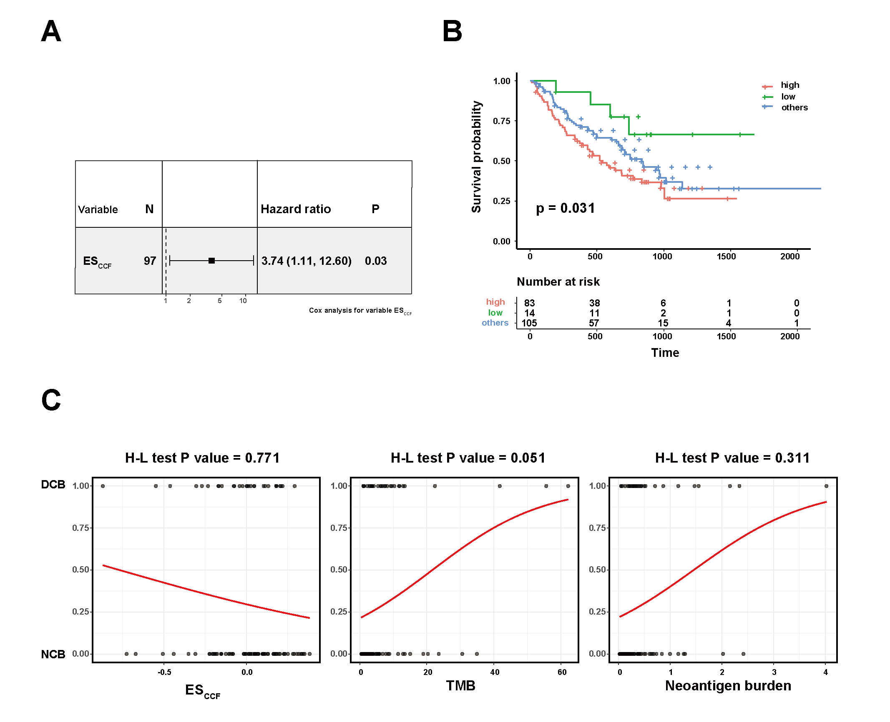

Quantification of neoantigen-mediated immunoediting in cancer evolution
Tao Wu1, 2, 3,  Guangshuai Wang1, 2, 3
Xuan Wang1, 2, 3
Shixiang Wang1, 2, 3
Xue-Song Liu1,4,
Guangshuai Wang1, 2, 3
Xuan Wang1, 2, 3
Shixiang Wang1, 2, 3
Xue-Song Liu1,4,
1 School of Life Science and Technology, ShanghaiTech University, Shanghai 201203, China
2 Shanghai Institute of Biochemistry and Cell Biology, Chinese Academy of Sciences, Shanghai, China
3 University of Chinese Academy of Sciences, Beijing, China
4 Corresponding Author
Abstract
Immunoediting, which includes three temporally distinct stages, termed elimination, equilibrium, and escape, has been proposed to explain the interactions between cancer cells and the immune system during the evolution of cancer. However the status of immunoediting in cancer remain unclear, and the existence of neoantigen depletion signal in untreated cancer has been debated. Here we developed a distribution pattern based method for quantifying neoantigen mediated negative selection in cancer evolution. Our method provides a robust and reliable quantification for immunoediting signal in individual cancer patient. The prevalence of immunoediting signal in immunotherapy untreated cancer genome has been demonstrated with this method. Importantly, the elimination and escape stages of immunoediting can be quantified separately, tumor types with strong immunoediting-elimination tend to have weak immunoediting-escape signal, and vice versa. Quantified immunoediting-elimination signal predicts cancer immunotherapy clinical response. Immunoediting quantification provides an evolutional perspective for evaluating the immunogenicity of neoantigen, and reveals potential biomarker for cancer precision immunotherapy.
Results

Figure 1: Conceptual framework for the quantification of elimination and escape phases of immunoediting.

Figure 2: Distribution pattern based method for the quantification of neoantigen mediated negative selection in cancer evolution.

Figure 3: Pan-cancer distributions and features of the quantified immunoediting signals (ESCCF and ESRNA).

Figure 4: Immunoediting-elimination signal (ESCCF) and neoantigen-mediated negative selection strength quantification.

Figure 5: Quantified immunoediting-elimination signal (ESCCF) predicts cancer immunotherapy clinical response.
Conclusion
- Developed a brand new method for reliably quantifying neoantigen mediated immunoediting in individual cancer patient.
- With the new analysis framework, we demonstrate the pan-cancer existence of neoantigen mediated negative selection signal.
- Elimination and escape stages of immunoediting can be quantified separately, tumor types with strong immunoediting-elimination tend to have weak immunoediting-escape signal, and vice versa.
- Quantified immunoediting-elimination signal predicts cancer immunotherapy clinical response.
More
You can scan QR code at bottom center to see online analysis report. All code and related data are published at https://github.com/XSLiuLab/tumor-immunogenicity-score.
Acknowledgement
We thank the authors and participating patients of immunotherapy publications for providing the data for this analysis. Our gratitude is also extended to the TCGA project for making cancer genomics data available for analysis. Thank ShanghaiTech University High Performance Computing Public Service Platform for computing services. Thanks also to other members of Liu lab for helpful discussion.
Recent works of our lab
- He, Zaoke, Sun, Xiaoqin, Wang, Shixiang, et al. “Ggct (g-glutamyl cyclotransferase) plays an important role in erythrocyte antioxidant defense and red blood cell survival.” BRITISH JOURNAL OF HAEMATOLOGY (2021).
- Wang Shixiang, et al. “UCSCXenaShiny: An R/CRAN Package for Interactive Analysis of UCSC Xena Data.” BIOINFORMATICS (2021).
- Wang Shixiang, et al. “Copy number signature analysis tool and its application in prostate cancer reveals distinct mutational processes and clinical outcomes.” PLOS GENETICS (2021).
- He, Zaoke, Wu, Tao, Wang, Shixiang, et al. “Pan-cancer noncoding genomic analysis identifies functional CDC20 promoter mutation hotspots.” ISCIENCE (2021).
- Wang Shixiang, et al. “Sigflow: an automated and comprehensive pipeline for cancer genome mutational signature analysis.” BIOINFORMATICS (2020).
- Wang, Shixiang1, He, Zaoke, et al. “Can tumor mutational burden determine the most effective treatment for lung cancer patients?” LUNG CANCER MANAGEMENT (2019)
- Wang, Shixiang, et al. “Antigen presentation and tumor immunogenicity in cancer immunotherapy response prediction.” eLife (2019).
- Wang, Shixiang, Li An Cowley, and Xue-Song Liu. “Sex Differences in Cancer Immunotherapy Efficacy, Biomarkers, and Therapeutic Strategy.” Molecules 24.18 (2019): 3214.
- He, Zaoke, et al. “Ras Downstream Effector GGCT Alleviates Oncogenic Stress.” iScience 19 (2019): 256-266.
- Wang, Shixiang, and Xuesong Liu. “The UCSCXenaTools R package: a toolkit for accessing genomics data from UCSC Xena platform, from cancer multi-omics to single-cell RNA-seq.” The Journal of Open Source Software 4 (2019).
- Wang, Shixiang, et al. “The predictive power of tumor mutational burden in lung cancer immunotherapy response is influenced by patients’ sex.” International journal of cancer (2019).
- Wang, Shixiang, et al. “APOBEC3B and APOBEC mutational signature as potential predictive markers for immunotherapy response in non-small cell lung cancer.” Oncogene 37.29 (2018): 3924.
Research group led by Xue-Song Liu in ShanghaiTech. University. Lab website is shown in QR code at bottom right.